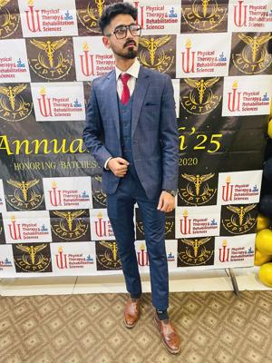

About Me
I am a motivated Physical Therapist from Karachi, Pakistan, experienced in musculoskeletal, pulmonary, and geriatric rehabilitation, as well as tutoring in Biology and Chemistry for SSC/FSC students.
Services
- Rehabilitation (Musculoskeletal, Pulmonary, Geriatric)
- Patient Education & Counseling
- Home Visit Physiotherapy
- Online Tutoring (Biology & Chemistry)
- Clinical Skills Coaching
Certifications
- Orthoflex: Disease-based Physiotherapy
- Fall Prevention – DUHS
- Sports Injuries – Elite Rehab Clinic
- Heart Rate Variability – DUHS
- Basic Resuscitation – JPMC
- Red Flags in Back Pain – Elite Rehab Clinic
- Blood Donation – Fatimid Foundation
Contact
Email: muham.huzaifa89@gmail.com
Phone: +92 325 9282956
LinkedIn: LinkedIn Profile